Photo credits
All photographs come from Wikimedia Commons and are used under the licenses shown. They have been resized and are shown with dark gradient overlays. Velocity Motors is a fictional brand, and no pictured vehicle or company is affiliated with it.
- Light Trails On The Highway (60829112).jpegMakia Minich · CC BY-SA 3.0
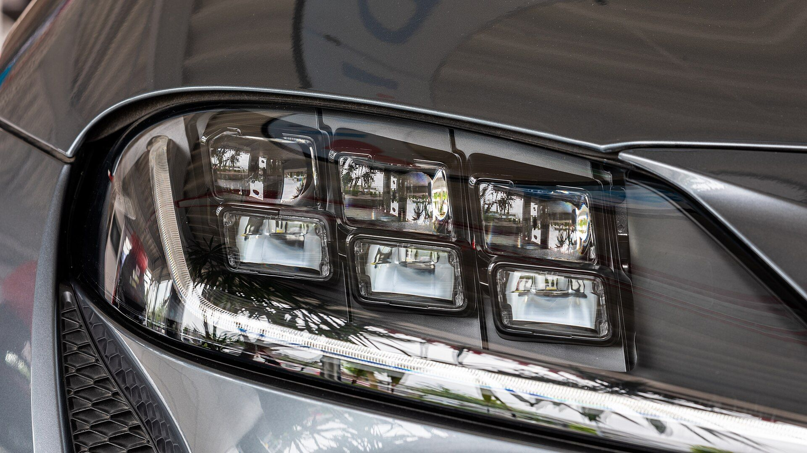
Dülmen, Auto Bertels, Toyota GR Supra -- 2021 -- 9564.jpgDietmar Rabich · CC BY-SA 4.0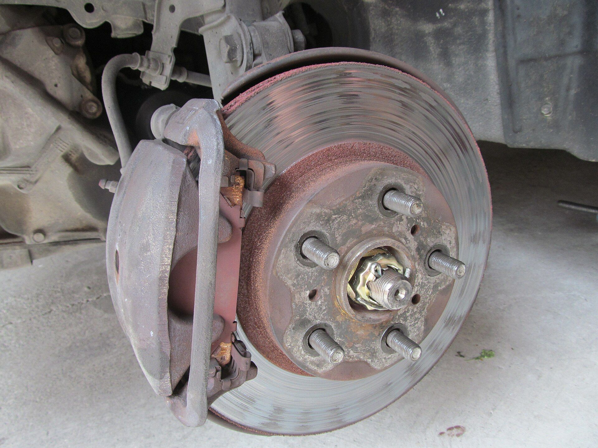
Alarm bells! (25681917701).jpgRiley from Christchurch, New Zealand · CC BY 2.0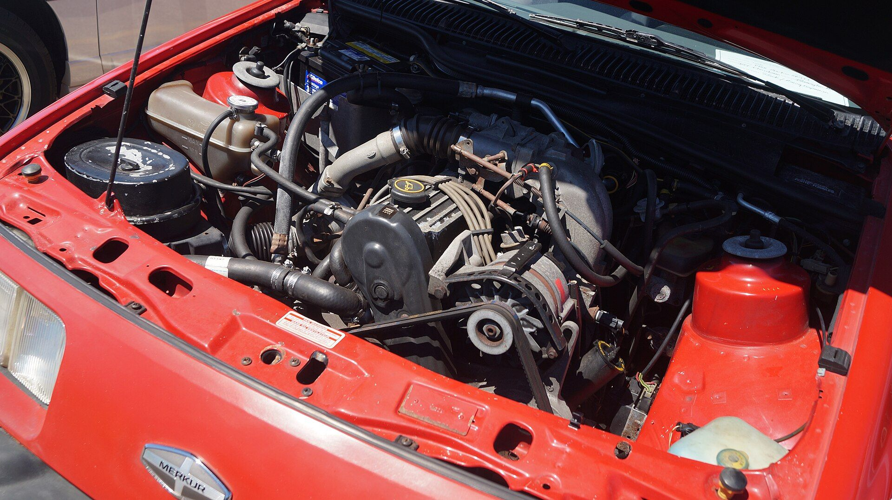
Engine bay of Merkur XR4Ti.jpgGreg Gjerdingen from United States · CC BY 2.0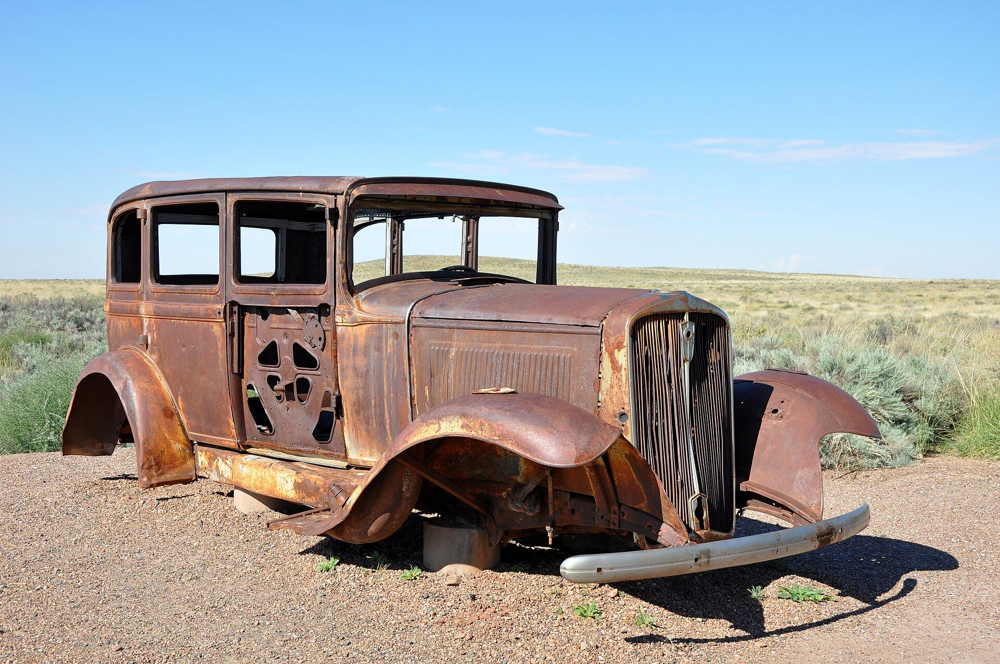
Route 66 car petrified forest.jpgFinetooth · CC BY-SA 3.0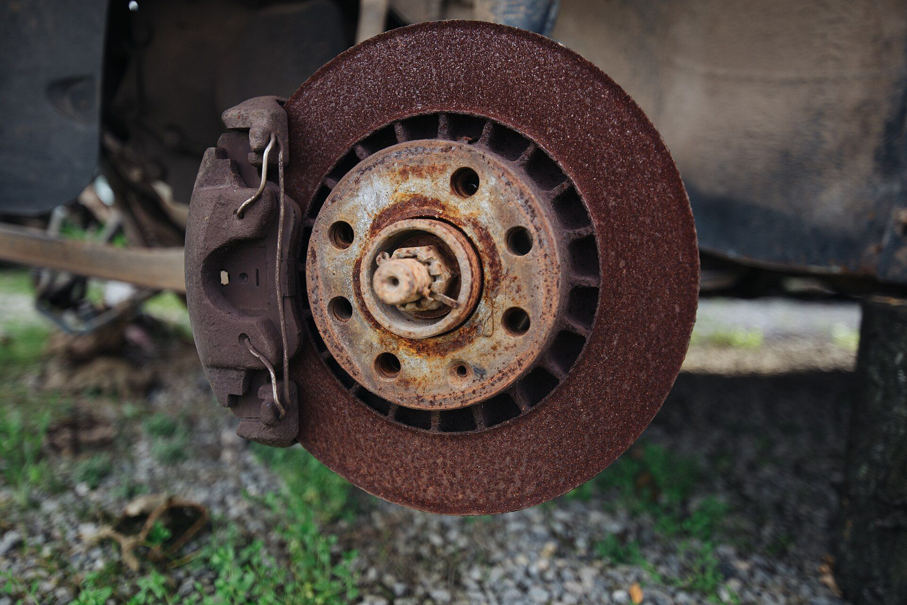
Rusty brake disc and caliper shown on a vehicle parked on gravel near a road.jpgShixart1985 · CC BY 2.0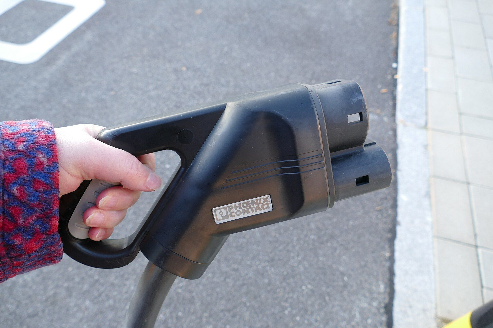
Electric vehicle charging station at Pippinger Flur 07.jpgKritzolina · CC BY-SA 4.0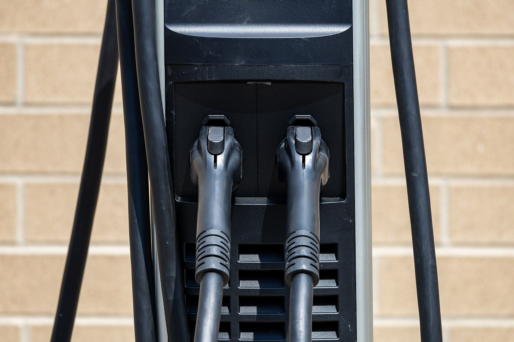
Charge Point charging station handles, Windsor, Ontario, 2025-07-30.jpgChris Woodrich · CC BY-SA 4.0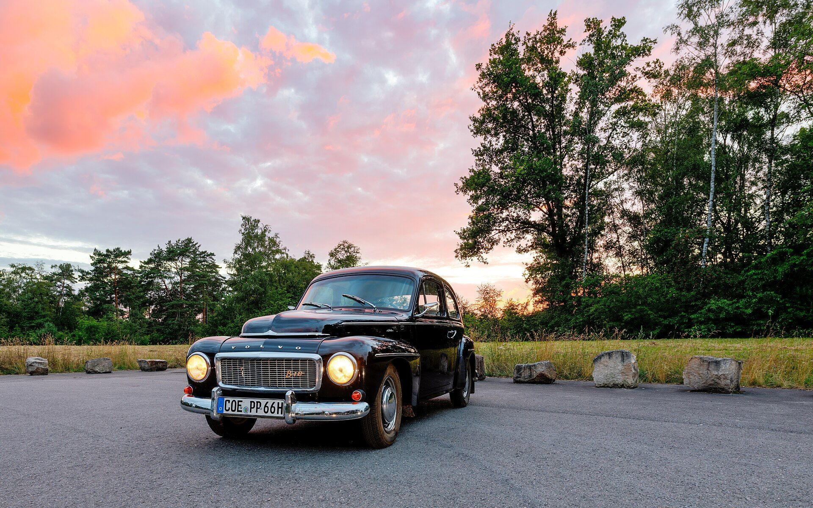
Dülmen, Merfeld, Volvo PV 544 B18 -- 2021 -- 0075-9.jpgDietmar Rabich · CC BY-SA 4.0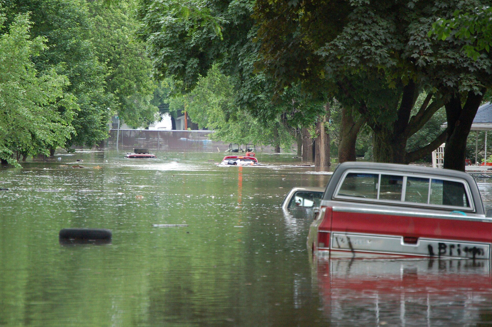
Sunken cars on flooded street in Cedar Rapids Iowa.jpg(photography: Don Becker, USGS) · Public domain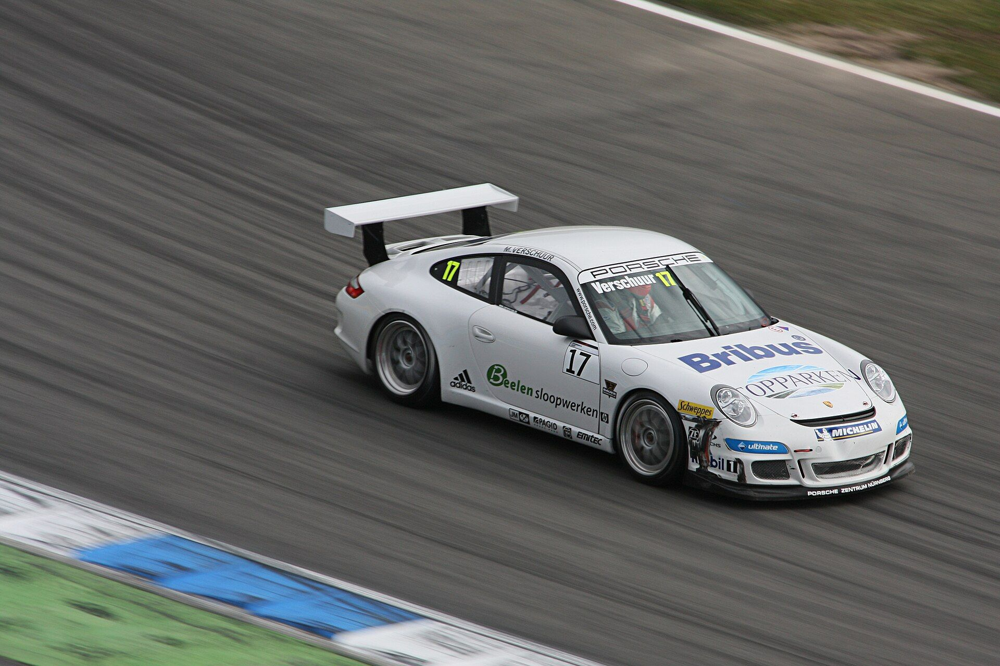
Porsche race car Verschuur amk.jpguser:AngMoKio · CC BY-SA 2.5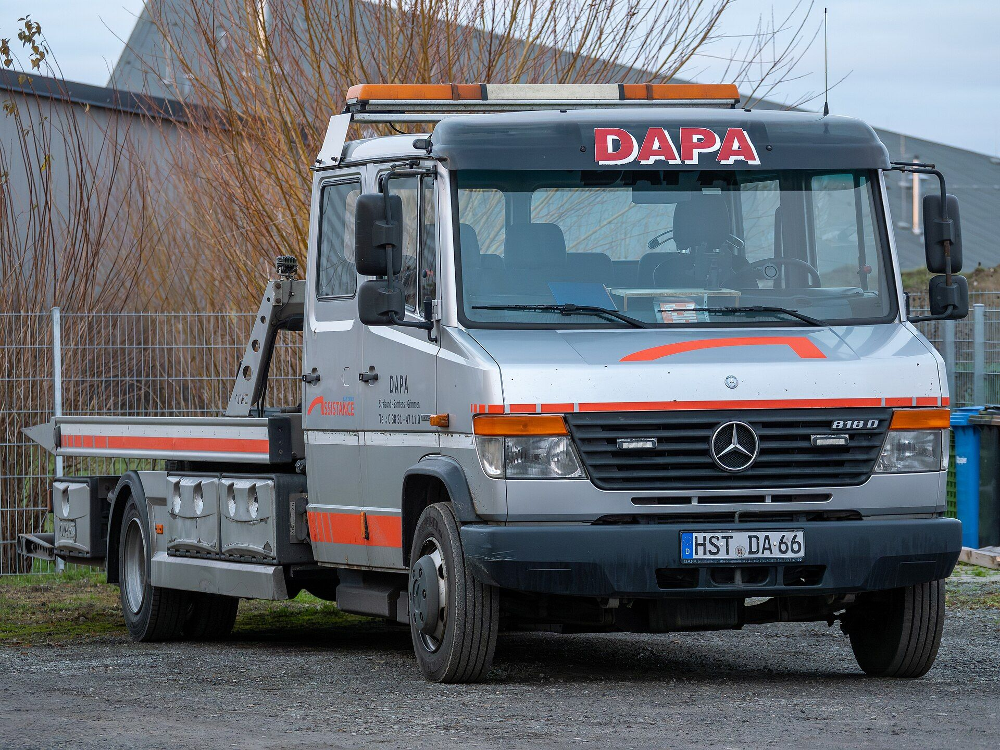
Mercedes-Benz, Ribnitz-Damgarten (20251224-P1074731).jpgMatti Blume · CC BY-SA 4.0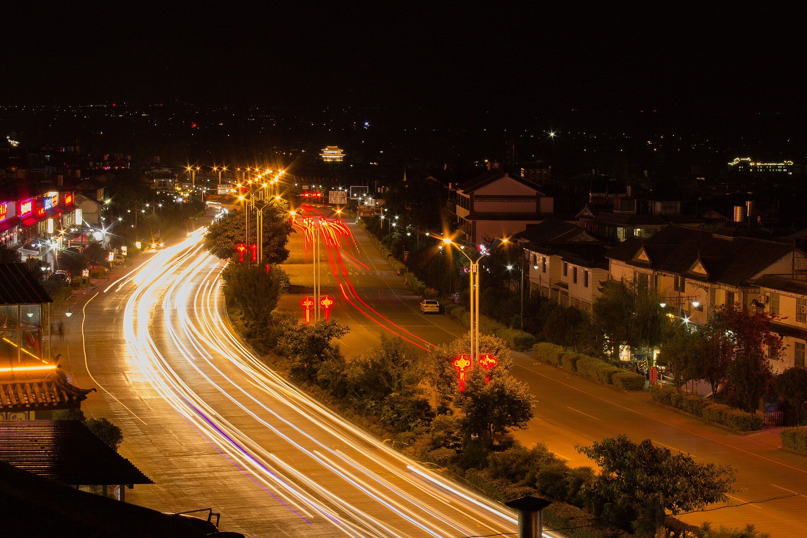
Dali City night automobile light trails.jpgJason Zhang · CC BY-SA 3.0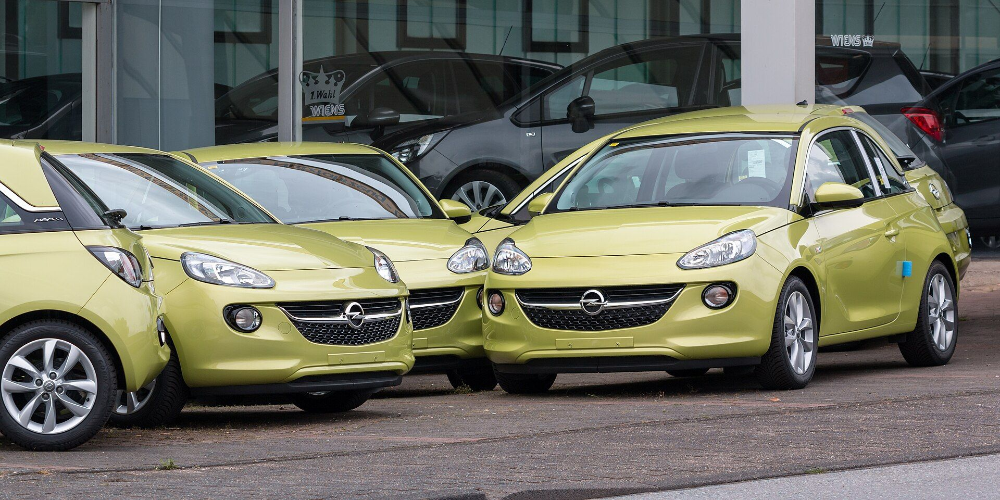
Billerbeck, Opel Wiens, Opel Adam -- 2017 -- 0661.jpgDietmar Rabich · CC BY-SA 4.0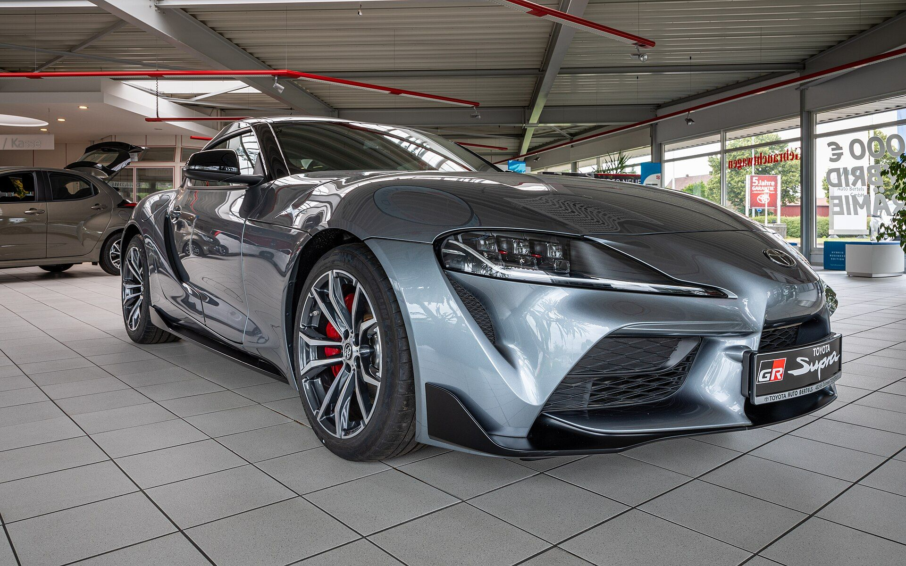
Dülmen, Auto Bertels, Toyota GR Supra -- 2021 -- 9539.jpgDietmar Rabich · CC BY-SA 4.0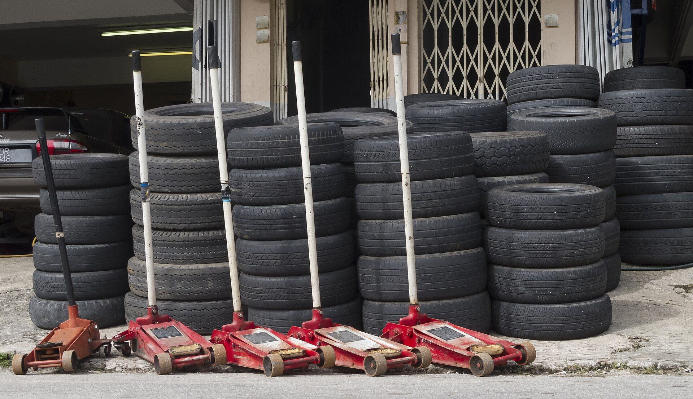
Gombak Malaysia Tyre-repair-shop-01.jpgCEphoto, Uwe Aranas · CC BY-SA 3.0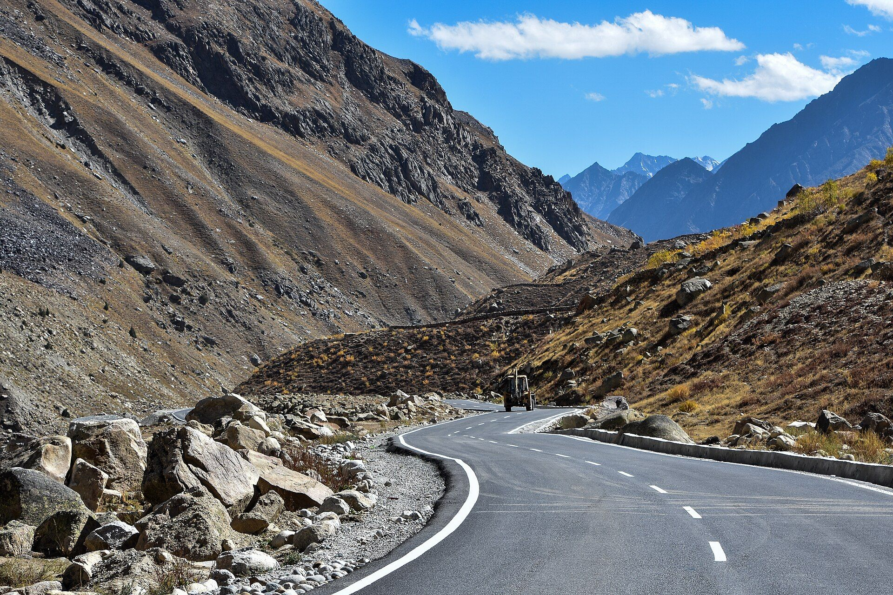
New Road Zanskar Sumdo Lahaul Oct20 D72 18201.jpgTimothy A. Gonsalves · CC BY-SA 4.0
.jpeg){kind=link}

.jpg){kind=link}


.jpg){kind=link}